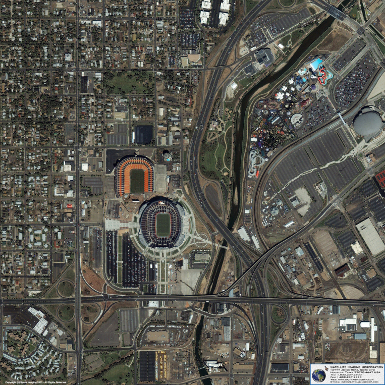
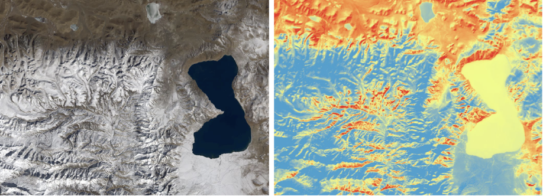

4 Remote Sensing for Urban Policy
4.1 City of Choice & Policy Concern
In Week 4, we’ve been tasked with identifying a particular city and policy challenge it faces which could be investigated or solved with remote sensing.
I haven’t yet ‘visited’ my hometown of Denver in my degree programme yet and seeing that it deals with a number of problems (many of which I’m particularly passionate about), I wanted to take a look.
I want to talk not just about my problem of interest, urban heat effects, but also a particular contributing factor - high amounts of impervious surface area and specifically parking lots. Impervious surfaces are a global problem but America’s high automotive dependence and sprawling development patters have resulted in over 110 thousand square kilometres of surface area across the country (Frazer 2005). Most of the literature I’ve come across has talked about impervious surfaces focuses on either flooding (Feng, Zhang, and Bourke 2021) or heat island effects but I wish to focus on the latter.

Central regions of Denver experience a heat island effect relative to its surroundings that ranges anywhere from 3.5 to 4.2C depending on the time of day and current season (Thunen 2013). Cooling the city is a critical goal, and the UN Environment Programme identifies heat mitigation in urban areas as a goal of immense importance in its ‘Beating the Heat’ handbook for cities. (Environment 2021). Denver itself indicates in its climate action plan, the city is likely to experience increasingly intense heat events in coming decades and that improving resilience along this dimension is critical (Denver 2018).
Although it’s not possible to eliminate impervious surfaces entirely, one phenomena I noticed growing up in Denver was the massive number of vacant lots and unused parking lots which would remain unused for years on end. Large lots come with a number of environmental side effects and even when taken alone, contribute meaningfully to heat island effects (Davis et al. 2010). Additionally, research has shown that infill can have a positive effect on heat island effects (Helmholz et al. 2021).
4.2 Remote Sensing Dataset of Use
The good news for is that there exist a number of remotely sensed datasets which are extremely useful at identifying both impervious surface areas as well as the heat effects they generate. I would propose a method that applies the following datasets to be able to effectively identify areas of impervious surfaces, particularly parking lots, that are a) not part of existing structures and b) contributing to local heat effects:
4.2.1 Land Surface Temperature (LST)
All active Landsat platforms collect data in the thermal infrared band at 30 metre resolution (Sayler 2023) and its use in studying urban heat island effects is extensive (Xu et al. 2023). In order to investigate urban heating at a higher spatial resolution, this platform is preferable to using meteorological data as has been done in the past in the context of Denver (Thunen 2013).

4.2.2 Impervious Surface Area (ISA)
Although not a primary Landsat product like LST, Impervious Surface area can be derived from Landsat products and is available to researchers as a remote sensing product (Zhang et al. 2022). This data is also available at 30 metre resolution
4.2.3 OSM Building Footprint Data
As impervious surfaces cover a large proportion of land in metropolitan Denver, using OSM Data could help narrow the search to identify disused lots or areas of impervious surfaces which could otherwise be altered.
4.2.4 Taken Together…
It would be my hope that a combination of these datasets would allow policy-makers to identify the areas of Denver which most suffer from heat island effects and be able to search for nearby lots which might be eligible for infill or conversion into greenspace in order to help alleviate local effects.
With that said, impervious surfaces like parking lots are only one piece of the heat island puzzle and attempts to tackle heat islands at a city-level should absolutely apply other methods put forward by the ‘Beating the Heat’ manual such as heat-resilient infrastructure, street trees, and expanded greenspace, to name a few (Environment 2021).
4.3 Advancing Existing Methods
In addition to building upon existing methodologically-based heat maps, using remote sensing to mitigate heat islands, especially in the context of impervious surfaces constitutes a shift from the methods most often used to address heat. The policy approaches most often employed include building with high albedo materials, improving ground vegetation and shade trees, and green roofs and facades (Degirmenci et al. 2021). I think remotely sensed data provides an incredible opportunity to address root causes instead of mitigating effects, hence my interest in suggesting that it be used as a tool to identify areas of heat-insensitive development.
4.4 Reflection
I found it more challenging than I anticipated to identify a combination of city, problem, data source, and policy suggestion that fit the bill for this week’s assignment. When looking around at what work had been done, I almost felt as if the whole span of applications had already been covered. In reality, it seems that a lot of approaches which feel like common sense are being ignored by a lot of municipalities. I don’t know if a city like Denver simply doesn’t have the bandwidth to further investigate heat effects, if it’s working hard through other means to fix them, or if it’s not concerned with them at all. Municipal documentation has been quite poor on that front.
Additionally, I find it surprising that so much of the work of urban heat resilience feels as if it’s concerned with mitigating the impact of heat than actually trying to lower the temperature. Shade shelters in particular feel like a bizarre first solution because, while I can see why they might be important and necessary in a number of circumstances, they won’t be any good at cooling cities down themselves like improved vegetation cover or reducing impervious surfaces would.